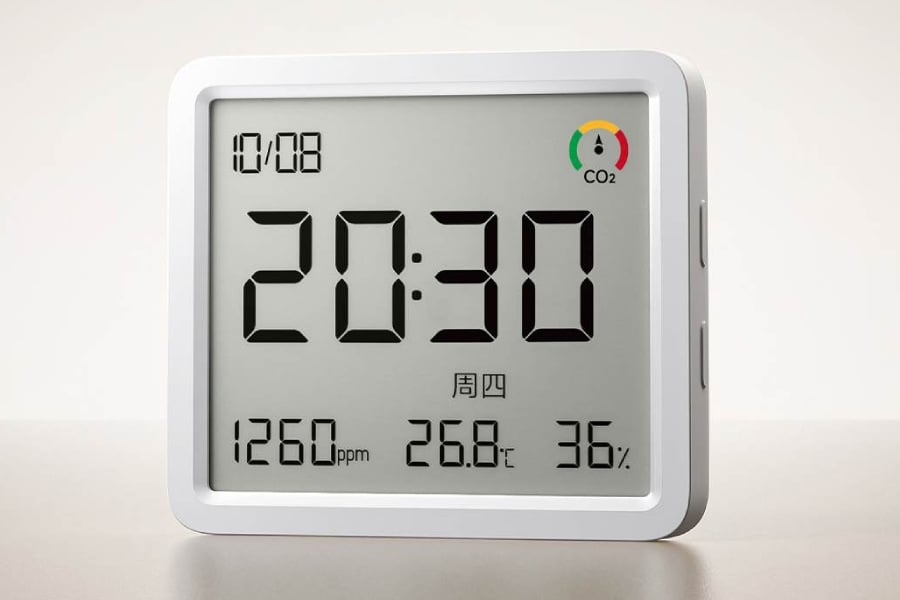
THE TECH EDIT
기술의 변화, 매일 한눈에.
카메라 · 스마트폰 · AI, 해외 테크 소식을 모아 전합니다.
최근 발행2026-09-17
새로 들어온 소식
LATEST STORIES
최신 뉴스
전체 3,047개 기사
윈본드, 인피니언 NOR 및 F-RAM 사업 11억 2천만 달러에 인수 추진, 사이프레스 반도체 복귀 기대

vivo 포켓 프로그래밍 에이전트 BlueCode 프리뷰 버전 출시, 스마트폰용 Blue Heart 30B MoE 모델 연구 개발 중
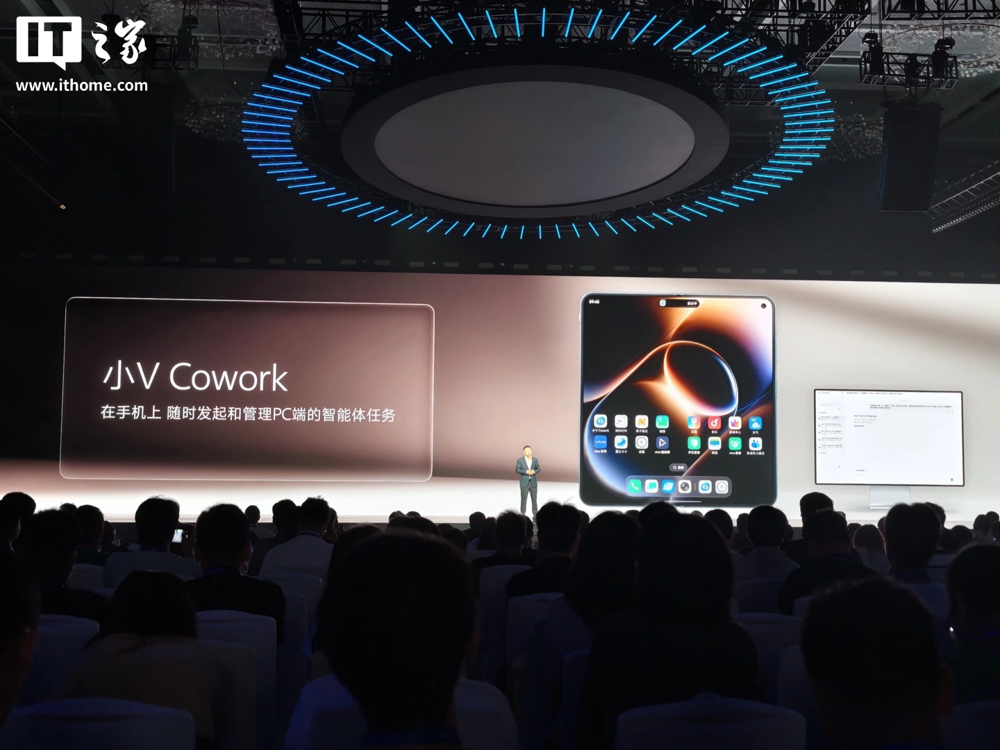
vivo, 스마트폰에서 PC AI 작업 시작 및 관리 가능한 '작은 V 코워크(小 V Cowork)' 출시
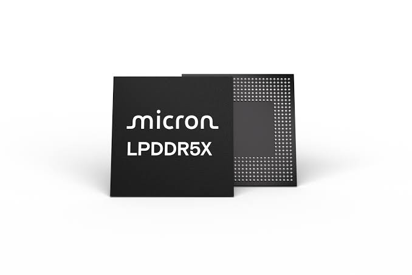
Samsung, 마이크론 1γ LPDDR5X 메모리 테스트 시작, Galaxy S27 시리즈 스마트폰에 적용 예상

Samsung Galaxy S27 Ultra, 5천만 화소 5배 망원 렌즈 그대로 탑재할 전망
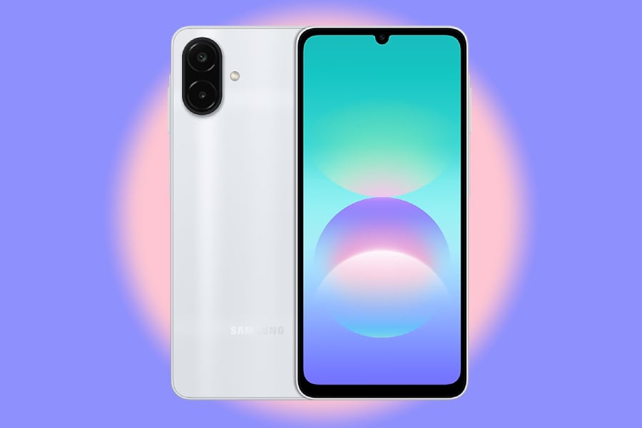
삼성, Helio G99 칩셋 탑재한 새로운 보급형 Galaxy 스마트폰 발표
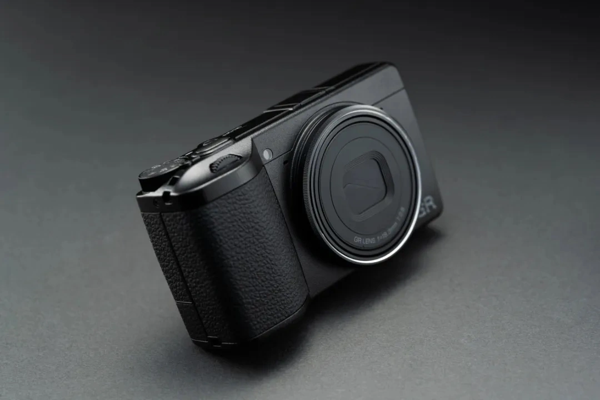
Ricoh, GR IV "GR 30주년 특별판" 카메라 공개: 전 세계 6,000대 한정, 11,499위안

Panasonic, 최초의 Copilot+ 인증 TOUGHBOOK 견고한 노트북 FZ-34 출시, 분리형 투인원 디자인
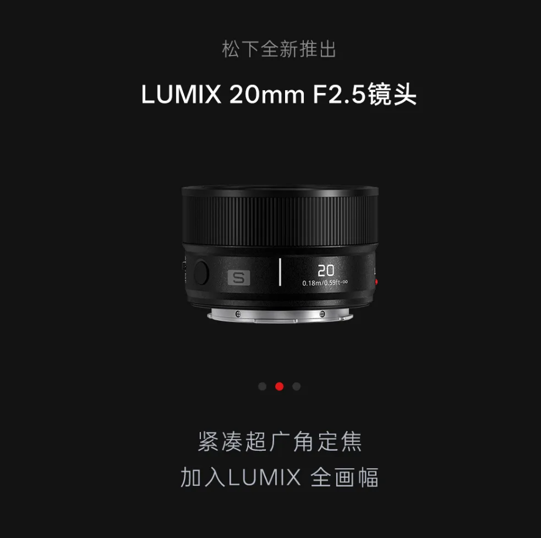
Panasonic LUMIX S 20mm F2.5 초광각 렌즈 출시, 142g 경량 디자인
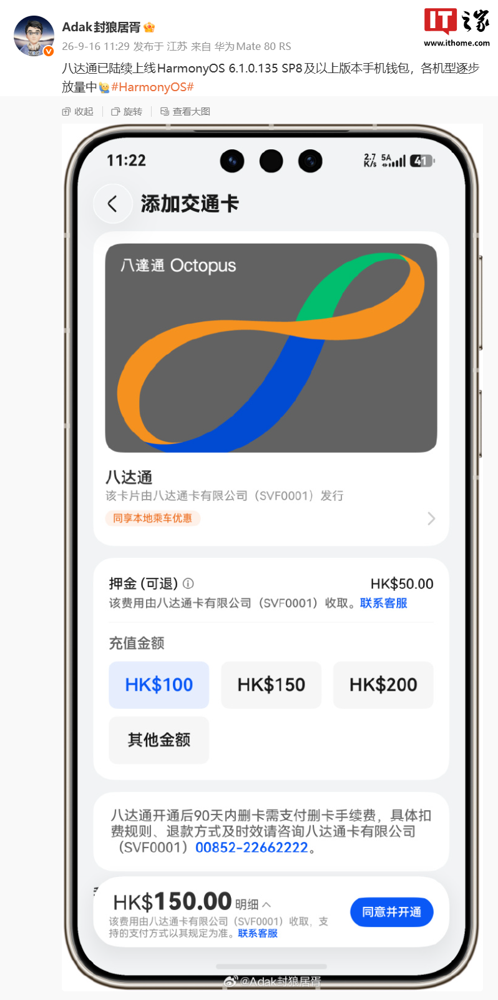
옥토퍼스 카드, HarmonyOS 6.1.0.135 SP8 이상 버전 Huawei 스마트폰 지갑에 순차적으로 출시 예정, 각 모델별 점진적 확대

Nubia NaviX Ultra 사용 후기: 스마트폰이 정말로 '당신을 대신해 스마트폰을 사용하기' 시작했다
30일 무료 체험 + 100만 안전 보장 서비스: Nubia NaviX Ultra 2세대 두바오 스마트폰 판매 개시
Meta, 카메라 없는 스마트 안경 출시 예정... 사생활 보호 우려에 대응
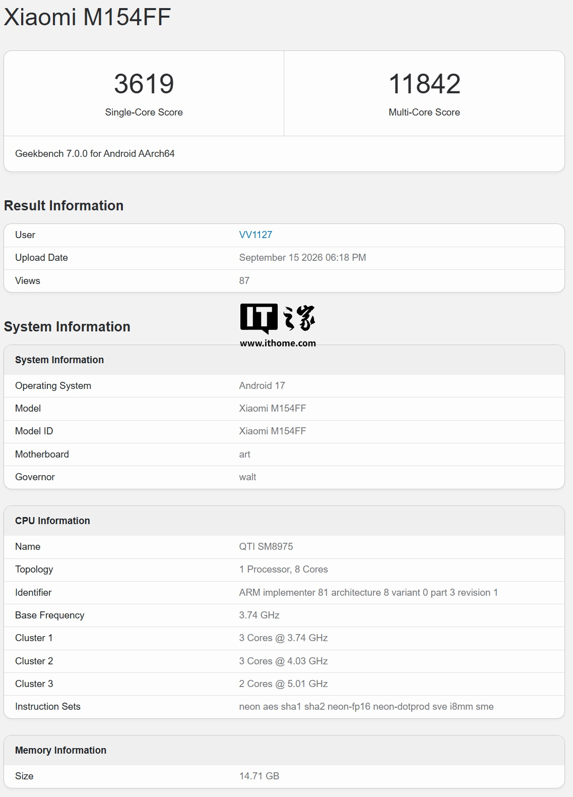
M154FF 벤치마크 점수 유출: 6세대 스냅드래곤 8 슈퍼 엘리트 + 16GB RAM, Xiaomi 18 Pro 스마트폰으로 예상
Insta360 Luna Ultra 짐벌 카메라 '작은 거포' 망원 모듈 공식 발표, 9월 21일 공개
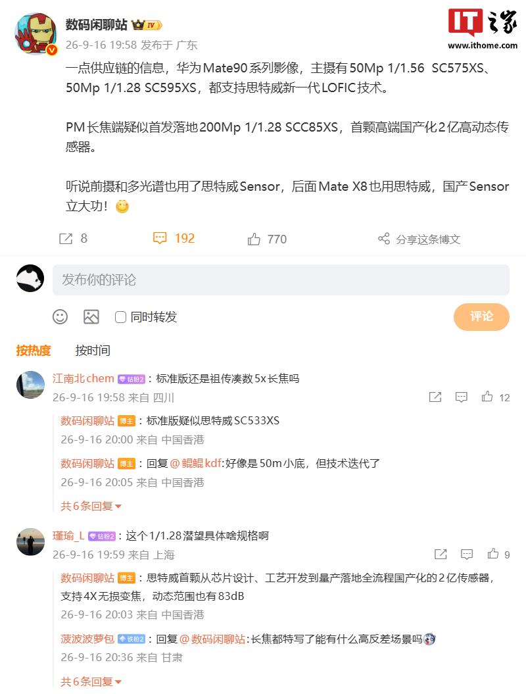
Huawei Mate 90 시리즈 스마트폰 카메라 사양 유출, 메인 카메라 SmartSense 차세대 LOFIC 기술 지원
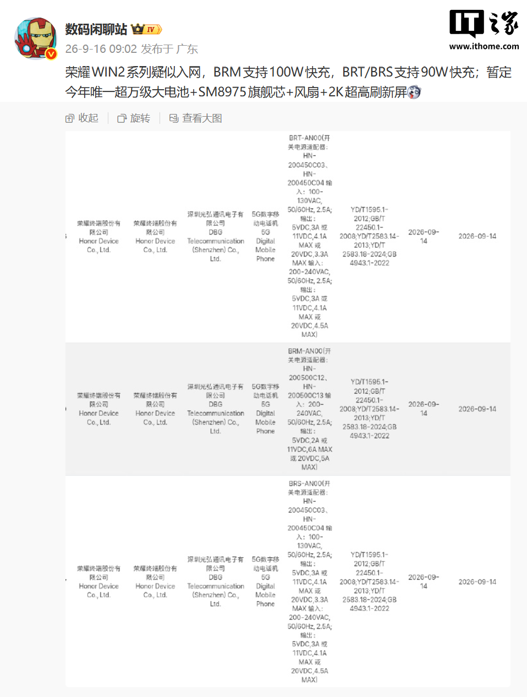
Honor WIN2 시리즈 스마트폰, 90W/100W 고속충전 및 Qualcomm SM8975 플래그십 칩셋 지원 예상
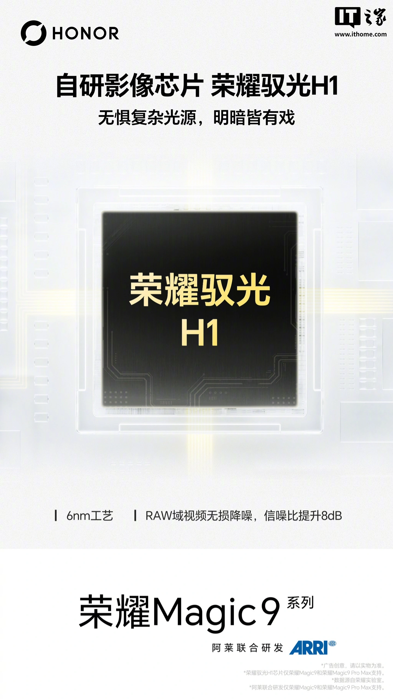
Honor Magic9 시리즈 스마트폰, 자체 개발 이미지 칩 Honor Yuguang H1 탑재 공식 발표: RAW 영역 비디오 무손실 노이즈 감소, 신호 대 잡음비 8dB 향상, 6nm 공정
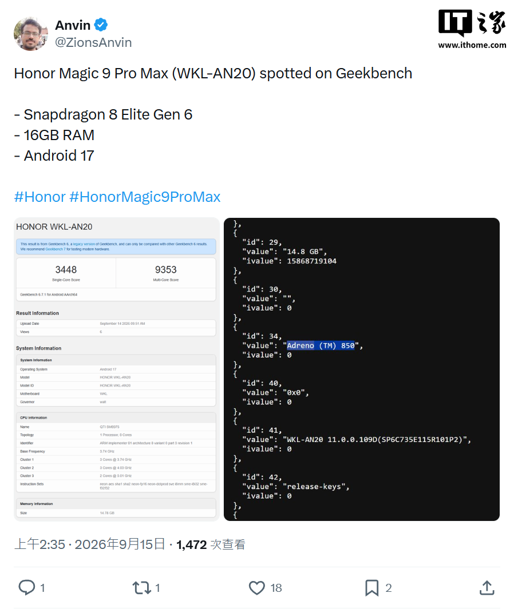
Honor Magic9 Pro Max 스마트폰 긱벤치 등장, 스냅드래곤 8 엘리트 Gen6 Pro(SM8975) 칩 탑재

2세대 더우바오 스마트폰 출시
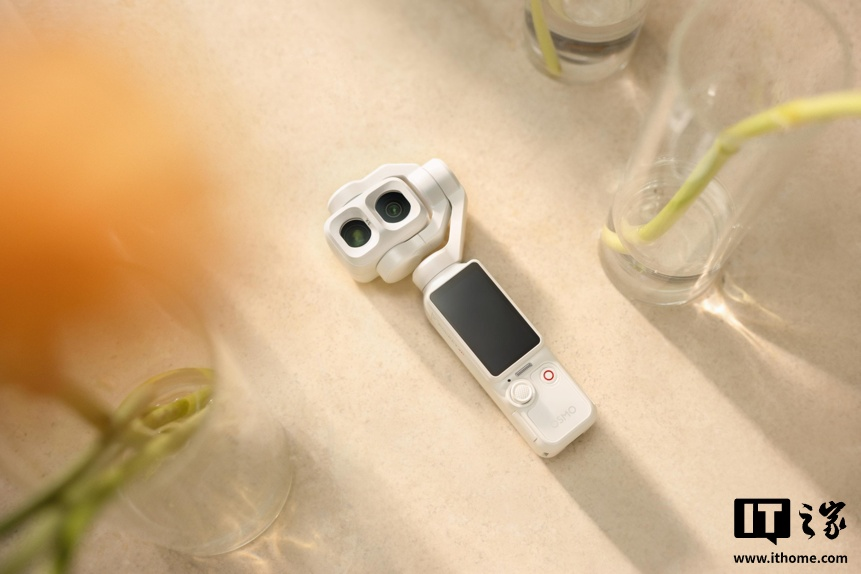
DJI Osmo Pocket 4P 듀얼 메인 카메라 포켓 카메라 '펄 화이트' 색상 출시, 3799위안
검색 결과가 없습니다
다른 검색어를 입력하거나 필터를 초기화해 보세요.